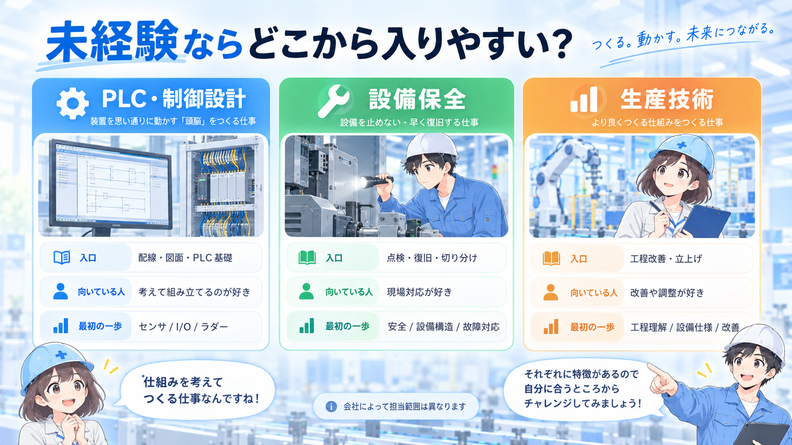
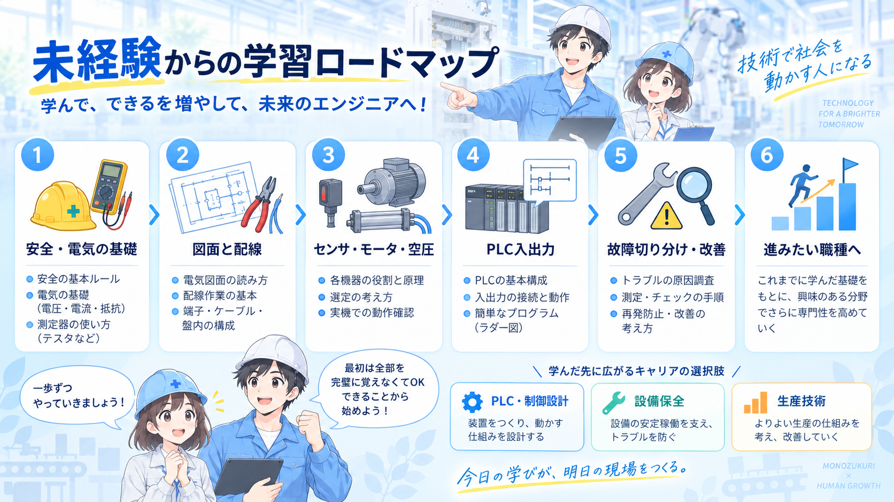

未経験からの入口は「職種名」より担当範囲で見る
同じ「未経験歓迎」でも、配線・組立、点検・復旧、PLCや図面の補助など、最初に任される仕事は会社ごとに違います。大切なのは入社後に何を経験できるかです。
代表的な入口はPLC・制御設計、設備保全、生産技術の3方向。どれが絶対に入りやすいとは言い切れないため、教育体制と最初の担当業務まで確認します。

未経験なら、まずPLCを勉強してから応募した方がいいですか？

PLCは役立つけど、最初は電気の基本や信号の流れも大事。応募先で最初に担当する仕事に合わせて、学ぶ範囲を決めると効率がいいよ。
3職種は「何を良くする仕事か」で比べる
3職種の違いは、細かな仕事内容を暗記するより、何を良くする仕事なのかで見ると整理しやすくなります。

未経験からは「順番」を決めて学ぶ
最初から高度な命令やネットワークまで覚える必要はありません。安全・電気の基礎 → 図面と配線 → センサ・モータ・空圧 → PLC入出力 → 故障切り分け・改善のように、実務でつながる順番で積み上げます。

当サイトで先に押さえたい記事
入りやすい職場は「教え方」と「最初の仕事」が見える
未経験者にとって重要なのは、職種名より教育の仕組みと最初に担当する仕事です。求人では次の点を確認します。
- 未経験者の採用実績があるか
- 入社後に誰と一緒に作業するか
- 最初に担当する具体的な業務は何か
- 電気・機械・PLCのどこまで社内で教えるか
- 1年後にどの仕事を任される想定か
「未経験歓迎」でも、すぐ一人で現場対応する求人と、先輩について段階的に覚える求人では意味が大きく違います。
最初の職種は、経験を広げるための入口
設備保全へ入ったから保全だけ、制御設計へ入ったからPLCだけ、と固定する必要はありません。電気・制御・設備・工程は現場でつながっているため、一つの設備を安全に理解し、信号や動作を追えるようになるほど次の領域へ広げやすくなります。
求人を見るときに確認したいポイント
- 最初の担当業務：配線、点検、PLC補助、設備改善など何から始めるか
- 教育体制：研修・OJT・先輩同行があるか
- 扱う設備：どんな業界・設備・機器を扱うか
- 電気と機械の比重：どちらを多く担当する仕事か
- 出張・夜間・休日対応：立上げや故障対応の働き方
- 1〜3年後の役割：制御設計、保全、生産技術へ担当を広げられるか
応募前に準備しておくと強いもの
資格がなければ応募できない仕事ばかりではありません。未経験では、基礎を学んでいることと、なぜこの分野を選ぶのかを説明できることが大切です。
学習メモ
DC24V、接点、PLC入出力など、理解した内容を自分の言葉で残します。
簡単な回路・ラダーの理解
自己保持やインターロックを、動作の流れとして説明できる状態を目指します。
現場経験の言い換え
製造、組立、品質、保全補助などの経験を、安全・改善・設備理解と結び付けて整理します。
応募先の担当範囲確認
求人票を読み、入社後に必要な知識を一つずつ補います。
転職サービス比較はSTEP4で別記事にします
この記事では未経験からの準備と職種選びに限定し、サービス比較には踏み込みません。
まとめ
未経験から電気・FAエンジニアを目指すときは、入社後の担当範囲と学べる環境を見ることが重要です。電気と信号の基礎を身につけたうえで、PLC・制御設計、設備保全、生産技術のどこから経験を積むかを考えれば、後から担当範囲を広げやすくなります。